MATLAMAT
- Melakukan pemeriksaan terhadap tempat-tempat penting berkaitan dengan peralatan tekanan minyak
- Meningkatkan pengetahuan team member agar berkemampuan membuat penilaian terhadap kerosakan mesin dan melakukan tindakan susulan
Marking Lock Nut
Pemeriksaan untuk mengetatkan bolt dan nut, serta
membuat EYE SEE mark bagi mengesan kebocoran
minyak, kelonggaran dan lain-lain
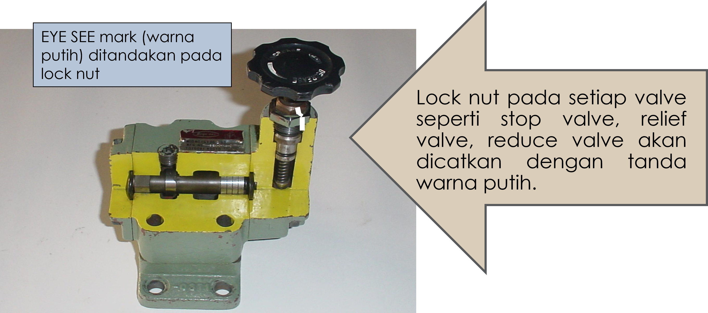
Susunan Paip & Hos Minyak
-
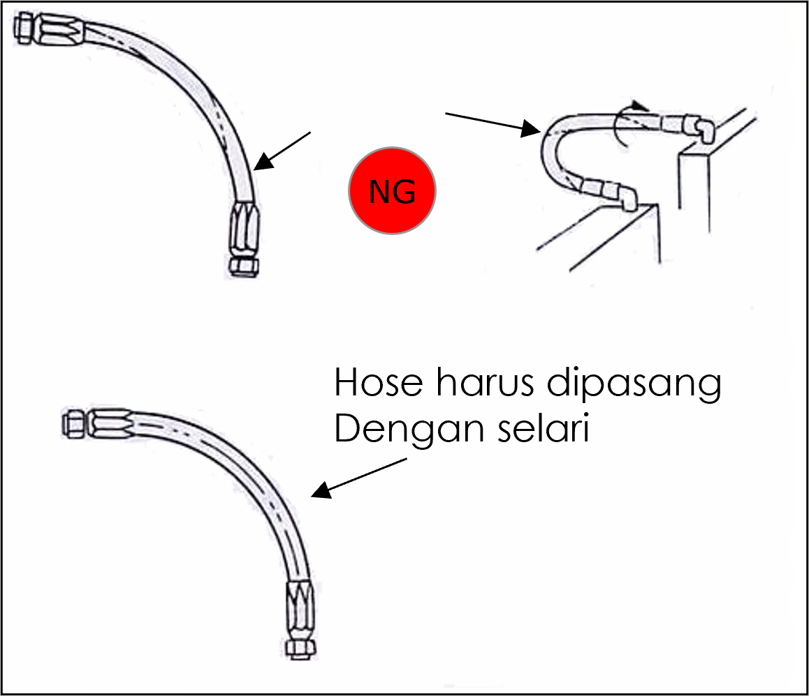
-
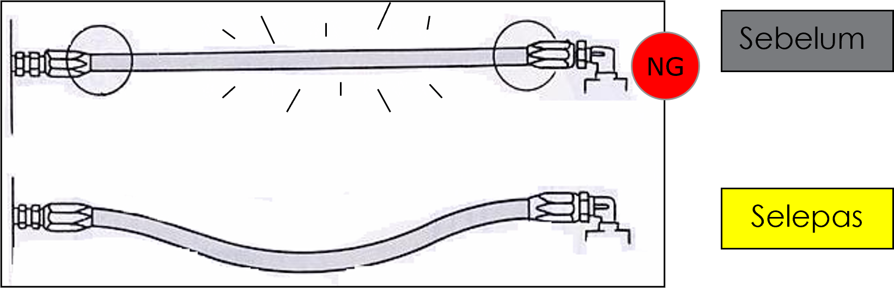
-
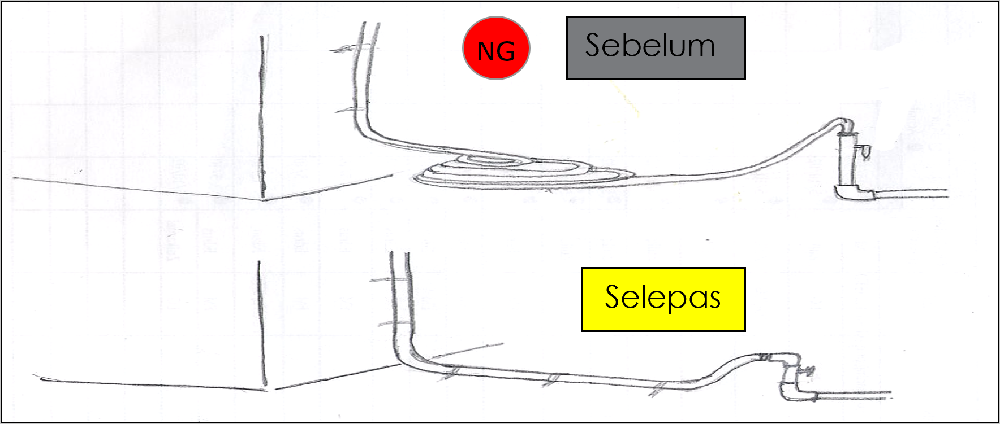
Penentuan Warna Paip & Hos

- Warna akan menentukan jenis paip dan kegunaanya
- Diletakkan tape pada bahagian paip dan mudah dilihat
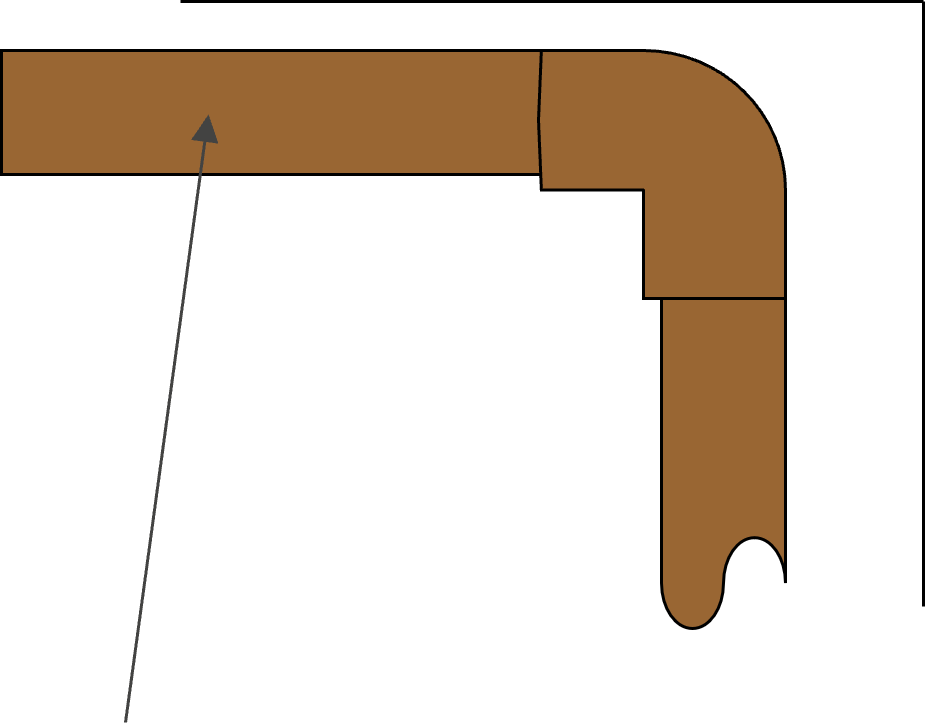
- Warna akan menentukan jenis paip dan kegunaanya
- Keseluruhan paip dicat atau diwarnakan
Meletakkan Label Pada Solenoid
Melakukan sama seperti penggunaan pada solenoid valve angin (step 4.3)
Eye See Label Dan Kanban tag
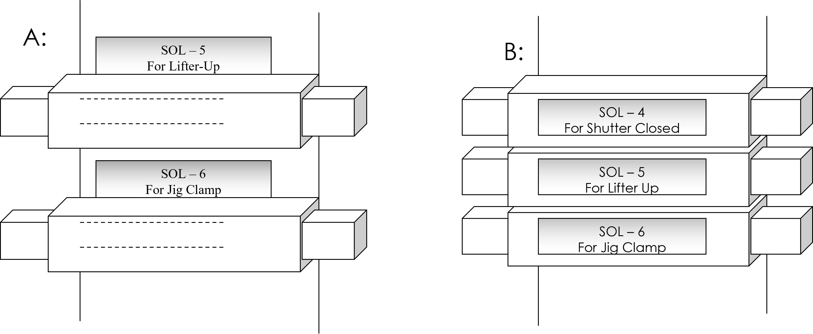
Meletakkan Tag Pada Hos
Melakukan perkara yang sama seperti tekanan angin
EYE SEE mark pada bahagian penyambungan pada hose
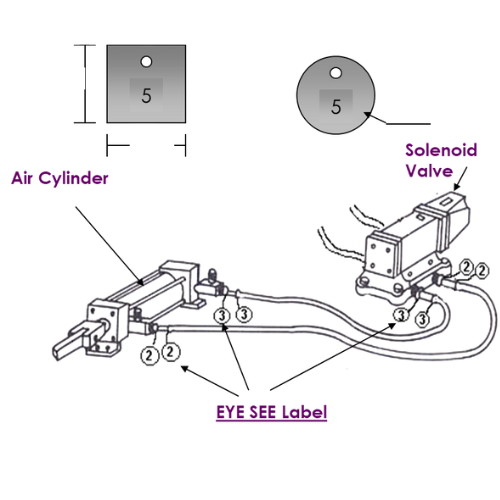
Meletakkan Label Pada Gauge
Label menunjukkan bacaan gauge tekanan angin
Menunjukkan tekanan yang digunakan pada salah satu (seperti di bawah)
Menunjukkan tekanan yang digunakan pada salah satu (seperti di bawah)
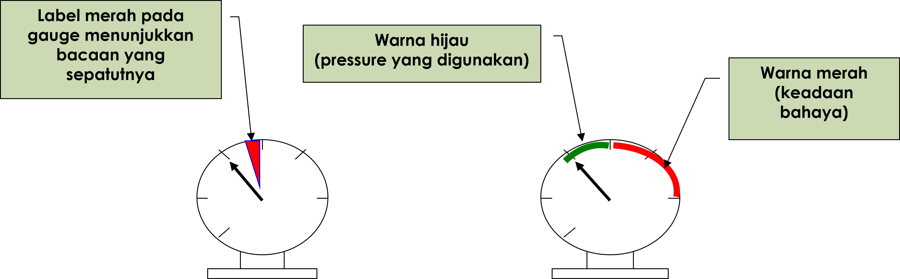
Kepada gauge yang sudah mempunyai label adalah tidak perlu ditambahkan label merah ini.
Penunjuk Sukatan & Aras Minyak
Semakan semula pada oil level sticker pada permukaan oil gauge
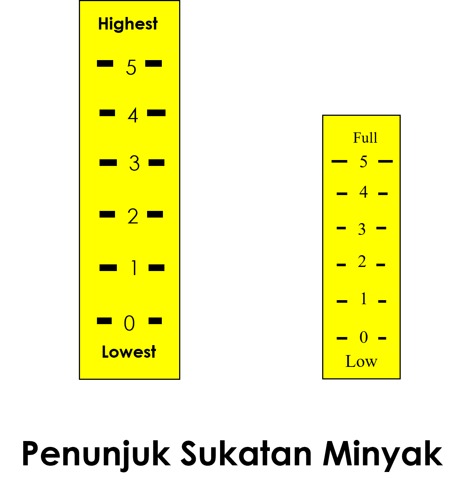
Contoh penunjuk aras minyak yang betul
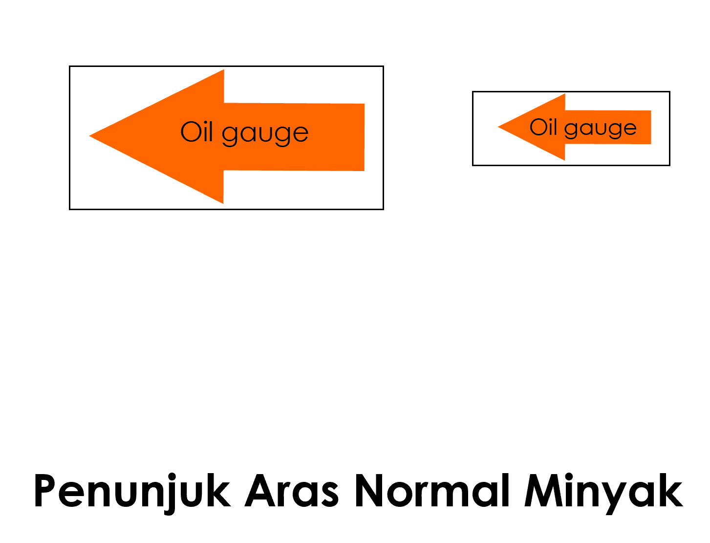
Contoh penunjuk aras minyak yang salah
1.1 Pressure Gauge
Struktur Am Pressure Gauge
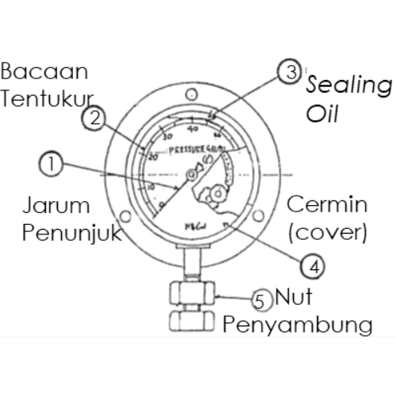
Fungsi: menentukan jumlah tekanan di dalam litar Hidraulik
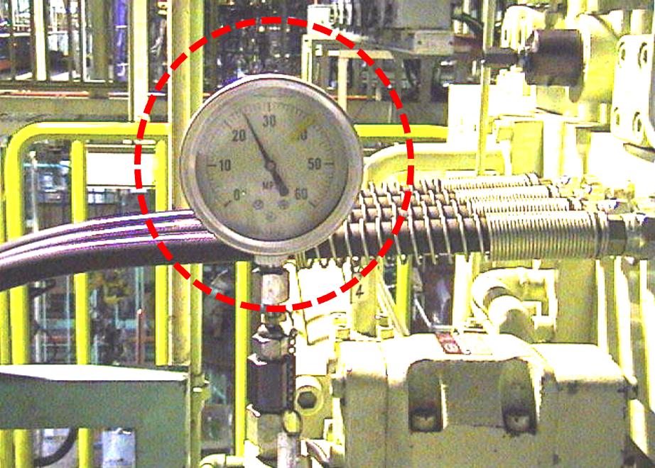
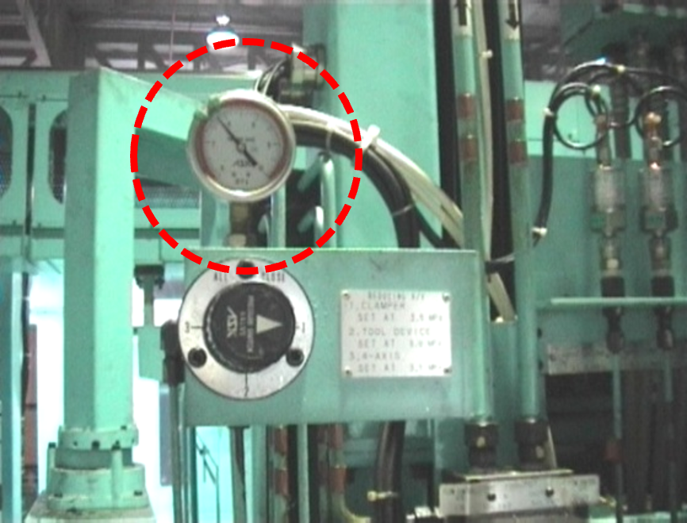
| FENOMENA KEROSAKAN | CARA PEMERIKSAAN | STANDARD PENILAIAN |
|---|---|---|
| Jarum penujuk tidak stabil | Lihat | Jarum penunjuk beradsa pada takat yang sepatutnya |
| Minyak hidraulik termasuk ke dalam gauge | Lihat | Sealing oil mesti berwarna jernih dan screw diikat ketat pada gauge |
| Kebocoran minyak (sealing oil) | Lihat | Isipadu sealing oil 3/4 daripada isipadu gauge |
| Cover cermin pecah atau berkabus | Lihat | Cover cermin tidak berkabus dan bacaan meter boleh dilihat jelas |
Jika sebarang kerosakan berlaku, blue tag perlu dikeluarkan
1.2 Oil Flow Gauge
Fungsi: Mengukur kandungan isipadu minyak di dalam tangki
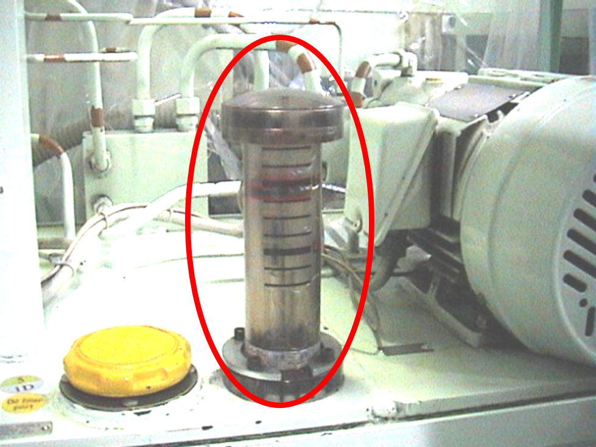
| FENOMENA KEROSAKAN | CARA PEMERIKSAAN | STANDARD PENILAIAN |
|---|---|---|
| Kebocoran minyak | Lihat/Sentuh | Tiada sebarang kebocoran pada mana-mana bahagian |
| Silinder pecah | Lihat | Tiada sebarang kesan retak |
| Label hilang | Lihat | Label ada dan boleh dibaca |
| Pelampung tidak berfungsi | Lihat | Pelampung pada takat yang ditetapkan |
Jika sebarang kerosakan berlaku, blue tag perlu dikeluarkan
2. Pump
Fungsi: Memberi kuasa tekanan kepada minyak untuk menggerakkan beban
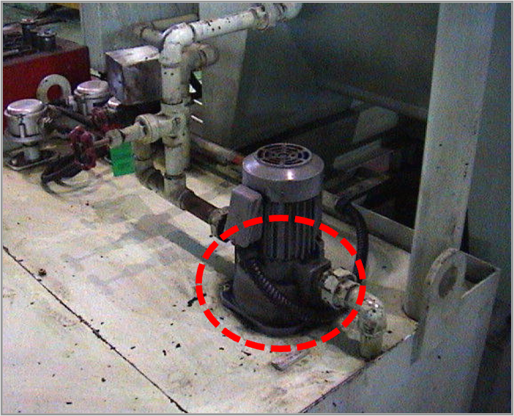
Dirty Pump
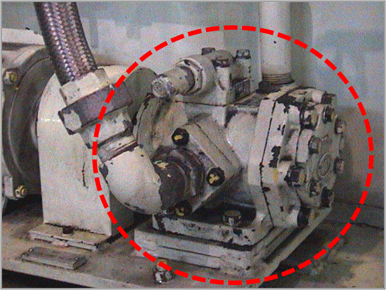
Patriot Pump
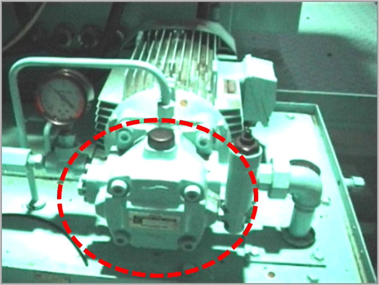
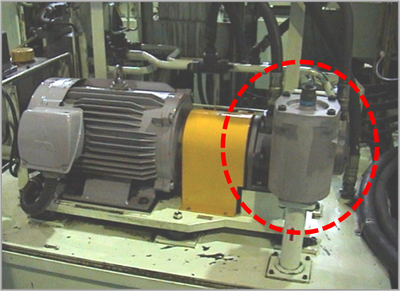
Piston Pump

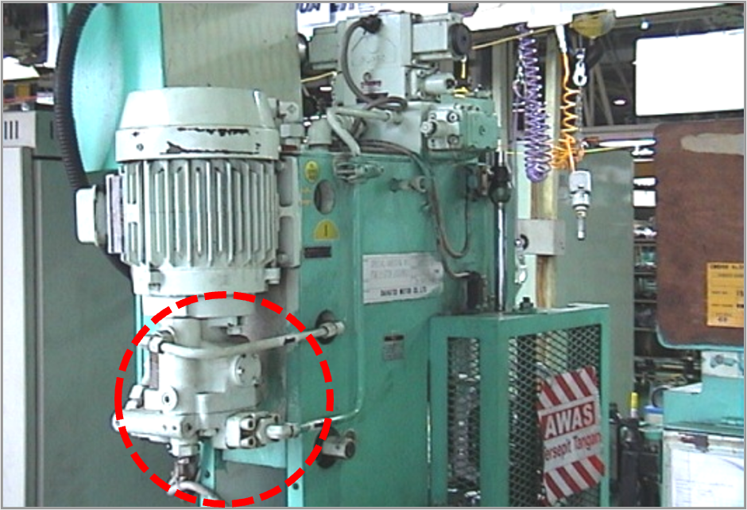
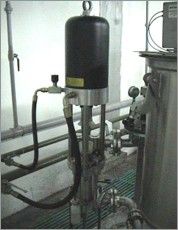
Hydraulic Pump
- Hanya terdapat di Paint Shop
- Mempunyai earthing wire
- Checking earthing wire perlu dimasukkan ke dalam standard check sheet
| FENOMENA KEROSAKAN | CARA PEMERIKSAAN | STANDARD PENILAIAN |
|---|---|---|
| Kebocoran minyak | Lihat/Sentuh | Tiada minyak pada setiap penyambung/hose fitting |
| Pengaliran minyak/pump tidak berfungsi dengan baik | Lihat (Pressure gauge) | Penunjuk meter berada di dalam kawasan yang ditetapkan |
| Gegaran/bunyi bising yang luar biasa | Dengar | Tiada gegaran atau bunyi yang tidak normal |
| Suhu pump tinggi | Lihat | Aras termo label berada pada takat yang sepatutnya |
| Pump kotor/berhabuk | Lihat | Tiada habuk atau lelehan minyak |
3. Tangki
Fungsi: Menyimpan minyak dan mengeluarkan angin yang terperangkap
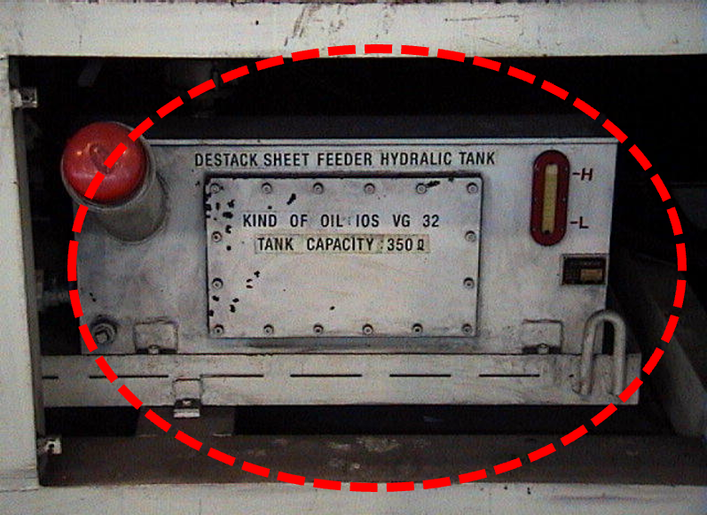
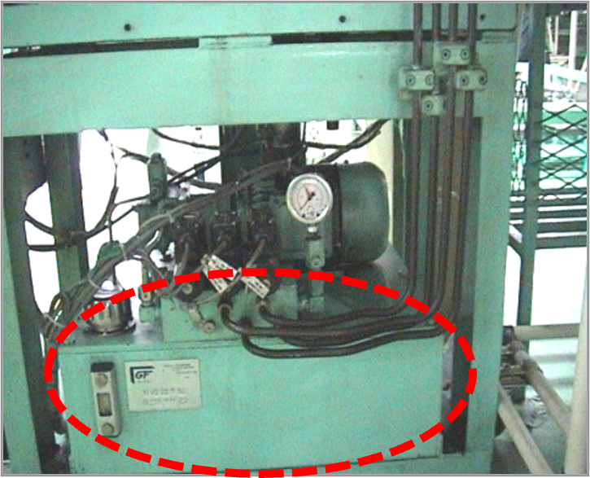
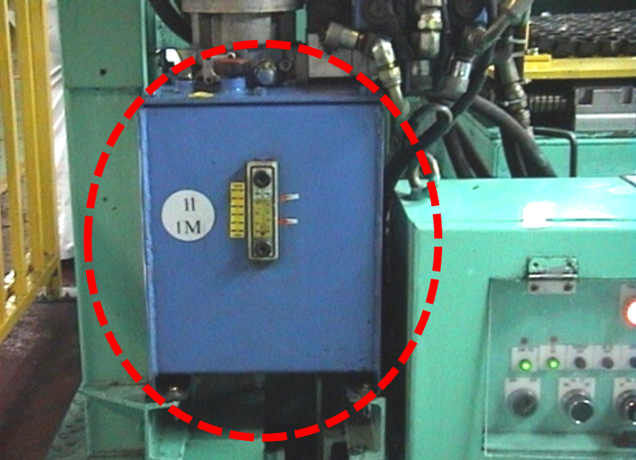
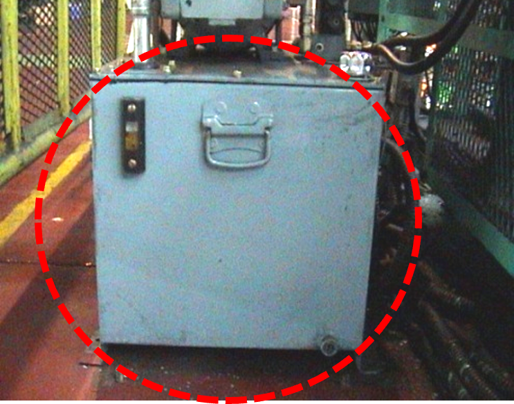
| FENOMENA KEROSAKAN | CARA PEMERIKSAAN | STANDARD PENILAIAN |
|---|---|---|
| Kebocoran minyak/berkarat/gasket rosak | Lihat/Sentuh | Tiada kebocoran berlaku pada mana-mana bahagian tangki |
| Penutup tangki minyak hilang/pecah | Lihat | Penutup boleh ditutup rapi dan tiada kesan pecah |
| Penunjuk aras minyak pecah/kabur | Lihat/Sentuh | Penunjuk aras boleh dibaca/tidak kabur/tiada kesan retak |
Jika sebarang kerosakan berlaku, blue tag perlu dikeluarkan
4. Hos/Paip
Fungsi: Penyambung minyak mesin kepada mesin daripada sumber utama minyak

| FENOMENA KEROSAKAN | CARA PEMERIKSAAN | STANDARD PENILAIAN |
|---|---|---|
| Kebocoran/Hos pecah | Lihat/Sentuh | Tiada minyak keluar dari hos |
| Berlipat/tidak kemas | Lihat | Hos berada dalam keadaan baik/tidak berlipat |
Jika sebarang kerosakan berlaku, blue tag perlu dikeluarkan
5.1 Solenoid Valve
-
Fungsi:
- Mengawal tekanan di dalam litar supaya sentiasa berada dalam keadaan yang ditetapkan dengan mengalirkan separuh atau kesuluruhan minyak untuk menggerakkan peralatan
- Mengubah arah aliran minyak termampat untuk mengawal pergerakan peralatan
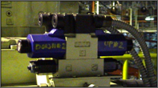
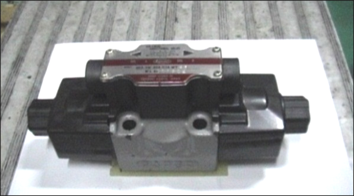
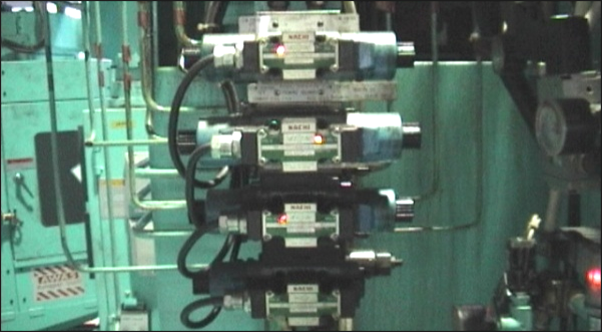
| FENOMENA KEROSAKAN | CARA PEMERIKSAAN | STANDARD PENILAIAN |
|---|---|---|
| Lampu pada solenoid valve sentiasa menyala/tidak menyala | Lihat | Lampu menyala mengikut masa yang ditetapkan |
| Peralatan minyak tidak berfungsi Contoh: Silinder minyak |
Lihat | Peralatan minyak bergerak dengan lancar tanpa tersekat-sekat |
| Kebocoran minyak | Lihat/Sentuh | Tiada kebocoran pada mana-mana bahagian valve |
Jika sebarang kerosakan berlaku, blue tag perlu dikeluarkan
5.2 Stop Valve/Ball Valve
Fungsi: Mengawal kemasukan minyak dalam satu arah daripada paip/hos minyak(buka/tutup)
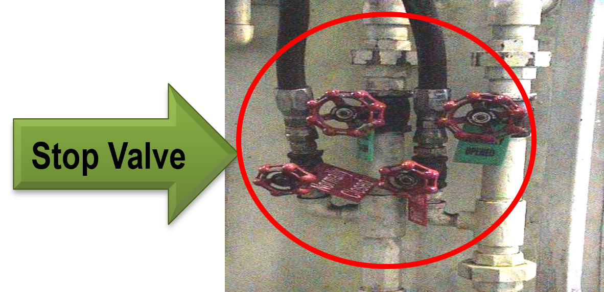
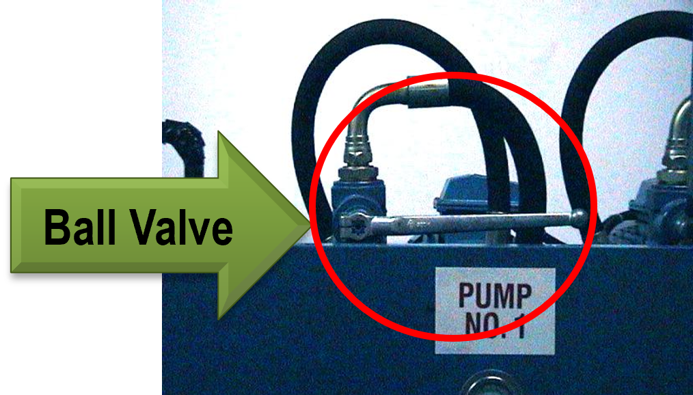
| FENOMENA KEROSAKAN | CARA PEMERIKSAAN | STANDARD PENILAIAN |
|---|---|---|
| Shutter valve ketat atau susah dibuka/tutup | Sentuh | Shutter valve boleh dibuka/ditutup tanpa memerlukan banyak tenaga |
| Shutter Valve patah/hilang | Lihat | Shutter valve dalam keadaan baik |
| Shutter valve loose | Lihat/Sentuh | Shutter valve tidak terlalu ringan semasa dibuka/ditutup |
| I.C label hilang | Lihat | I.C label tergantung dan kedudukan valve mengikut I.C label |
Jika sebarang kerosakan berlaku, blue tag perlu dikeluarkan
5.3 Check Valve
Fungsi: Mengalirkan minyak pada satu arah & tidak membenarkan aliran yang berlawanan
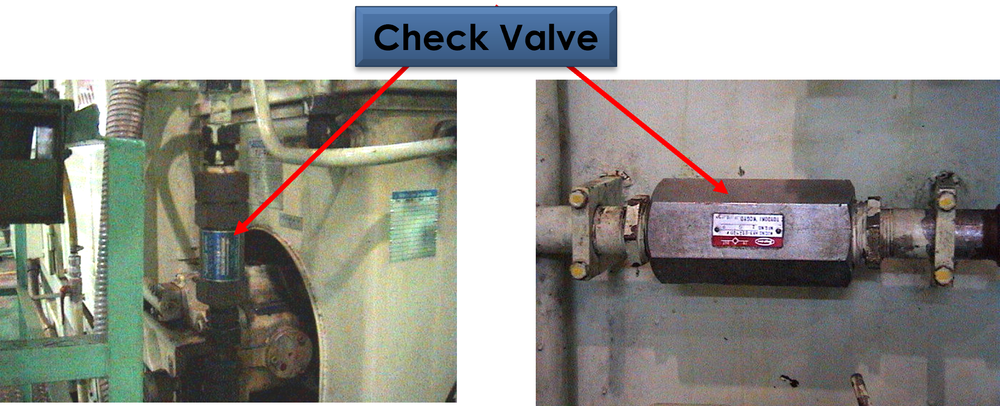
| FENOMENA KEROSAKAN | CARA PEMERIKSAAN | STANDARD PENILAIAN |
|---|---|---|
| Kemampuan melakukan kerja berkurangan | Lihat (Kadar pengeluaran minyak pada peralatan) |
|
Jika sebarang kerosakan berlaku, blue tag perlu dikeluarkan
6. Silinder
Fungsi:
- Melakukan kerja berulang-ulang secara berterusan terhadap minyak termampat yang keluar masuk dari paip/hos minyak
- Memindahkan daya pergerakan secara sejajar atau linear
Struktur Am Silinder
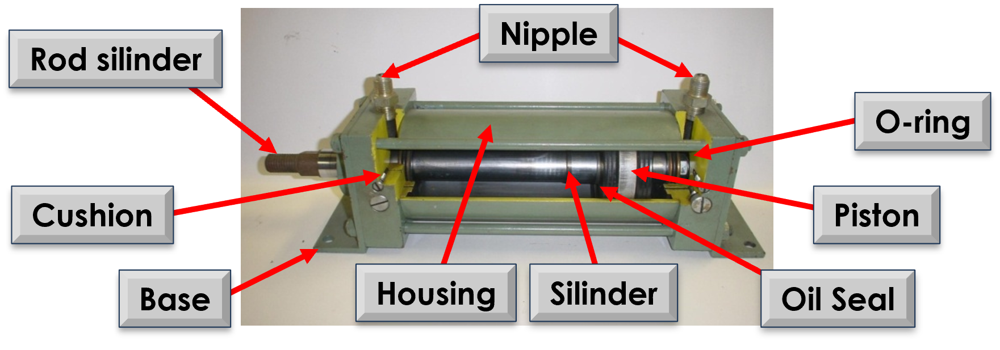
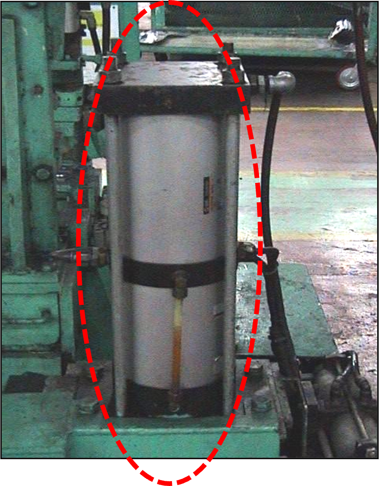
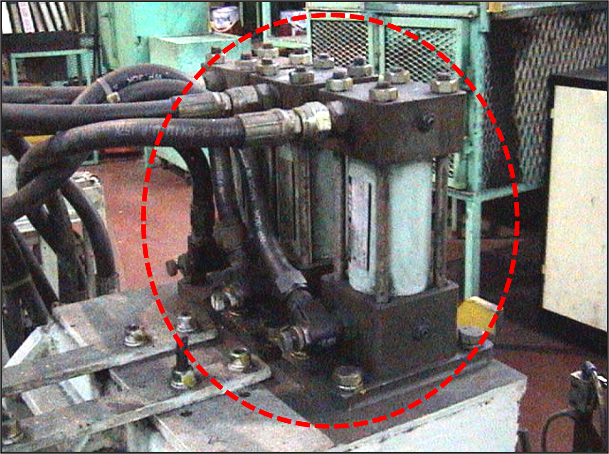
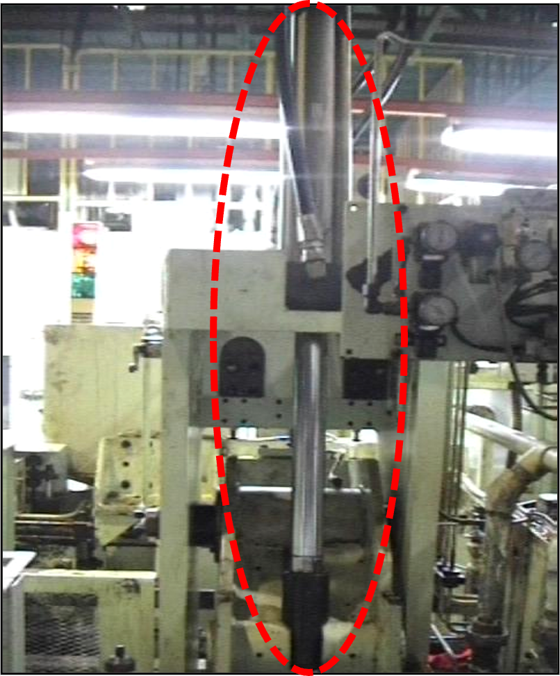
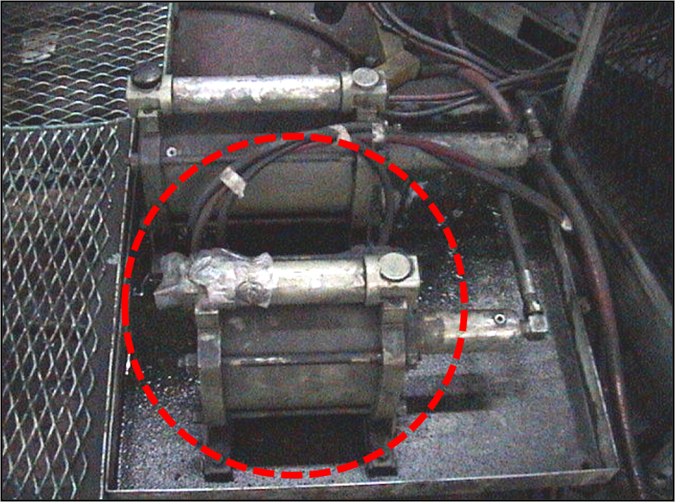
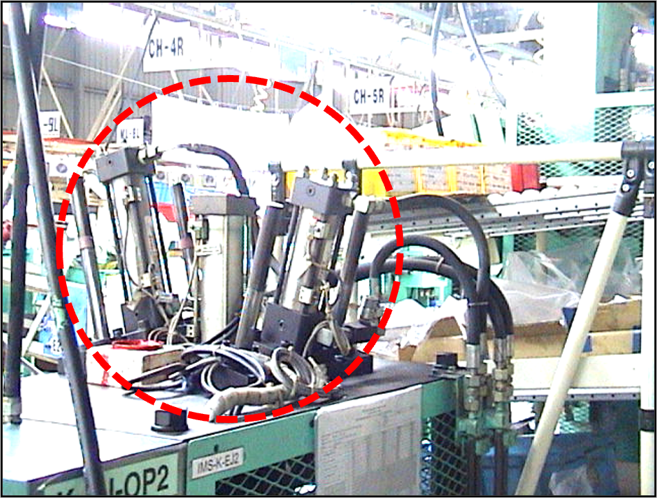
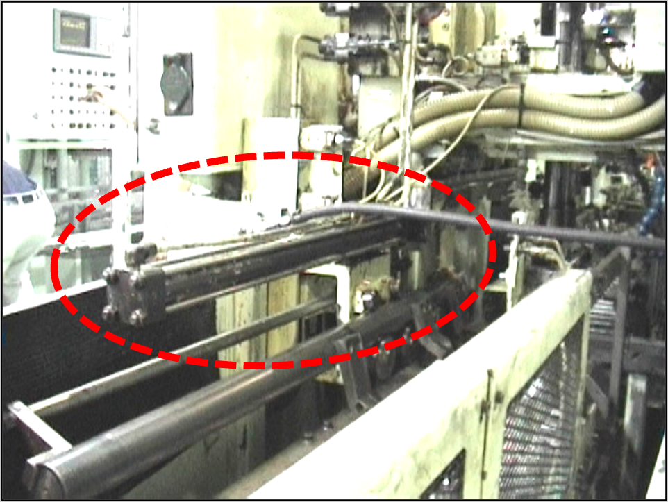
| FENOMENA KEROSAKAN | CARA PEMERIKSAAN | STANDARD PENILAIAN |
|---|---|---|
| Pergerakan silinder tersekat-sekat/tidak lancar atau bergerak | Lihat | Pergerakan yang lancar atau silinder bergerak pada masa yang ditetapkan |
| Kebocoran | Lihat | Tiada sebarang kebocoran pada mana-mana bahagian silinder |
| Rod silinder/spool bercalar | Lihat | Permukaan silinder licin |
| Housing kemek | Lihat | Housing berada dalam keadaan baik/tiada sebarang kesan kemek |
Jika sebarang kerosakan berlaku, blue tag perlu dikeluarkan
7. Oil Filter
Fungsi: Menapis segala bendasing yang terdapat di dalam minyak sebelum masuk ke mesin
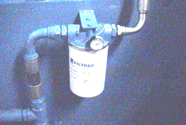
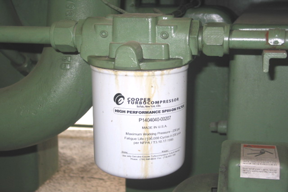
| FENOMENA KEROSAKAN | CARA PEMERIKSAAN | STANDARD PENILAIAN |
|---|---|---|
| Tersumbat | Lihat peralatan | Pergerakan silinder lancar seperti biasa |
| Kebocoran | Lihat/Sentuh | Tiada minyak pada mana-mana bahagian luar filter |
Jika sebarang kerosakan berlaku, blue tag perlu dikeluarkan
8. Air Regulator
Fungsi: Mengawal tekanan minyak dengan melaraskan tombol/pemegang
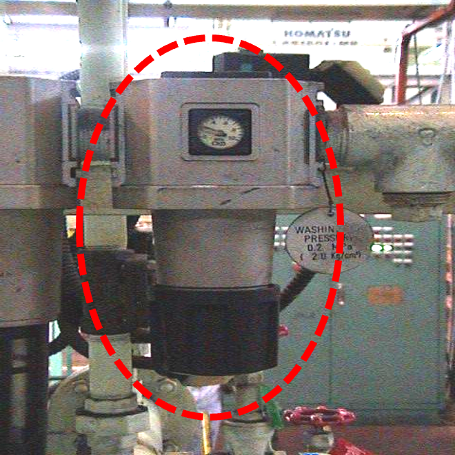
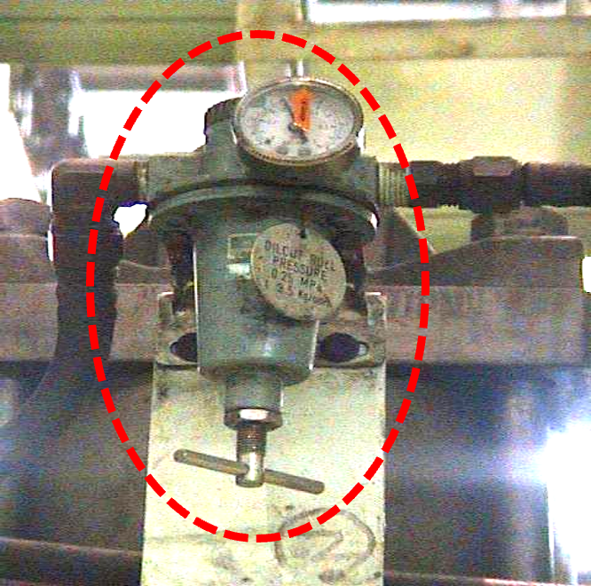
| FENOMENA KEROSAKAN | CARA PEMERIKSAAN | STANDARD PENILAIAN |
|---|---|---|
| Tombol tidak berfungsi | Sentuh | Tombol boleh dilaras |
| Kemampuan mesin melakukan kerja berkurangan | Lihat | Penunjuk gauge berada pada takat yang ditetapkan |
| Kebocoran | Lihat/Sentuh | Tiada kebocoran di mana-mana bahagian regulator |
| Cermin Gauge pecah | Lihat/Sentuh | Minyak gauge tidak keluar dari gauge meter |
| Tekanan minyak terlalu kuat/rendah | Lihat | Penunjuk gauge mesti berada pada takat yang ditetapkan |
Jika sebarang kerosakan berlaku, blue tag perlu dikeluarkan
9. Pressure Switch
Fungsi: Mengawal tekanan minyak secara automatik dengan mengesan perubahan yang berlaku dan
melaraskan kembali pada tekanan asal
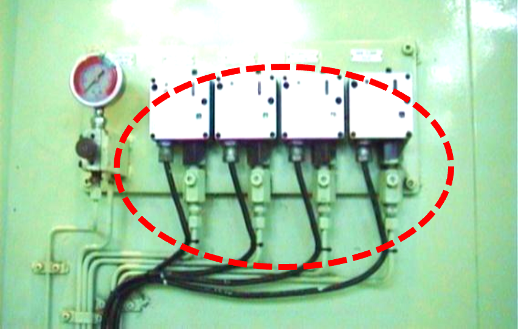
| FENOMENA KEROSAKAN | CARA PEMERIKSAAN | STANDARD PENILAIAN |
|---|---|---|
| Kebocoran | Lihat | Tiada kebocoran pada mana-mana bahagian switch |
| Kelonggaran hose/paip | Sentuh | Tiada kelonggaran pada mana-mana hose atau paip penyambung |
| Jarum pengukur dalam pressure switch rosak | Lihat | Jarum penunjuk berada pada takat yang ditetapkan apabila tekanan minyak masuk dan lampu menyala |
Jika sebarang kerosakan berlaku, blue tag perlu dikeluarkan